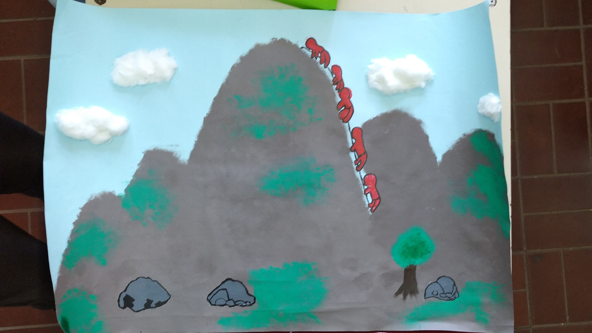

Galeria
Puedes tocar sobre cada imagen para ampliarla y leer la descripcion o frase correspondiente.
Trabajos Individuales o en Parejas
Renata del Barco y
Martina Marino
Constanza Díaz y
Lucía Rodríguez

Facundo Yucra
Trabajos Grupales
Guadalupe Ortiz, Luz Ozán,
Tomás Garro y Julieta Quaglia
Alejo Tapia, Facundo Balmaceda,
Juan Ignacio Cañas y Tiago Moyano

Rocío Díaz, Nadia Gonzalez, Facundo Yucra,
Agustín Pacheco, Joaquín Oviedo